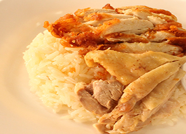
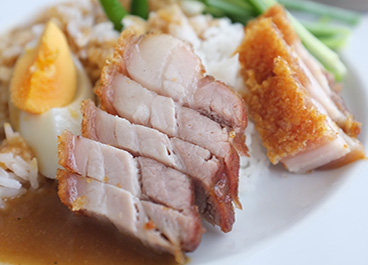

More Website Templates @ TemplateMonster.com - July 30, 2014!

Khao man gai is the Thai take on hainanese chicken rice, and it is a very common street food that can be found all over Thailand. It is commonly eaten at any time of day for breakfast, lunch or dinner. We have tried to make this recipe practical enough for you to make at home, whilst still retaining its great taste! You will need a rice cooker to prepare this recipe, however they are very cheap and make life so much easier!

Crispy roast pork is a very popular dish in Thailand. It goes well with steamed rice, rice noodle (with sweet and sour dipping sauce)

is a Singaporean Chinese meat dish, made of either braised or roasted duck and plain white rice. The braised duck is usually cooked with yam and shrimps; it can be served simply with plain white rice and a thick dark sauce; side dishes of braised hard-boiled eggs, preserved salted vegetables, or hard beancurd may be added. In addition, Teochew boneless duck rice is a similar, but a more refined dish; due to the slightly tougher texture of duck, the duck is artfully deboned and sliced thinly for the convenience and ease of the diner, allowing the sauces to seep into the meat, making it a more pleasant experience on the whole
 |
| 

{kind=link}
{kind=link}